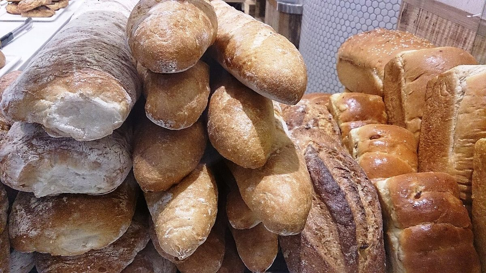

木へんの五字帖
五つの字で、五つのページ。
このページの作りは、屋号に含まれる「木」の字から制作側が連想したものです。お店の理念・由来とは無関係です。
写真のイメージ
木・粉・火。
写真はお店のものではない、国外・撮影地不明のフリー素材です。



ご案内
確認できていること
| 所在地 | 〒306-0632 茨城県坂東市辺田1517-7 |
|---|---|
| 電話 | 0297-35-1277 |
| 営業時間 | 準備中 |
| 定休日 | 準備中 |
| ご予約 | 準備中 |
| 駐車場 | 準備中 |
| SNS | Instagram @pan_kimura1955 |